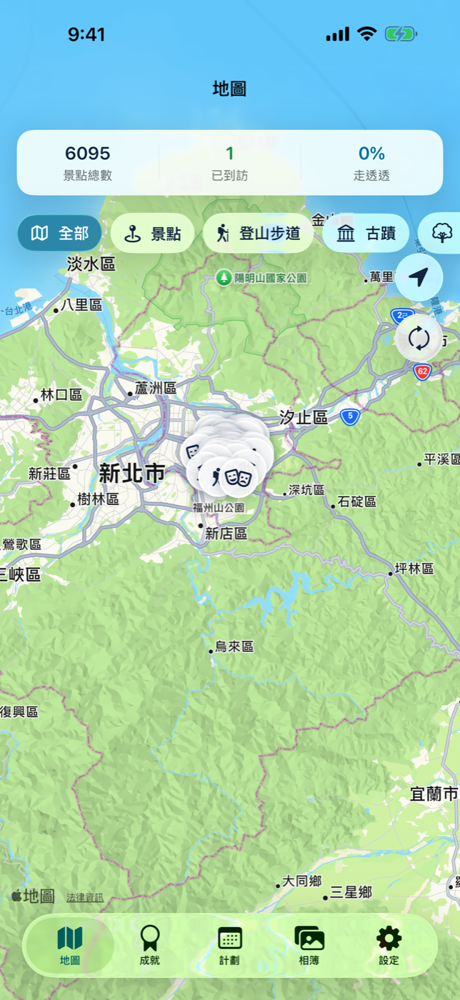
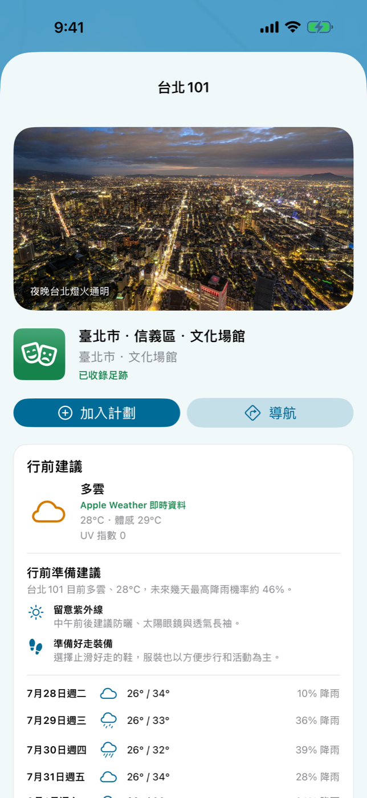
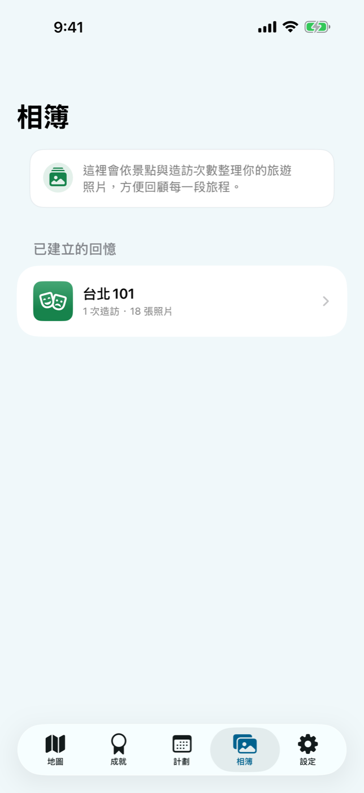
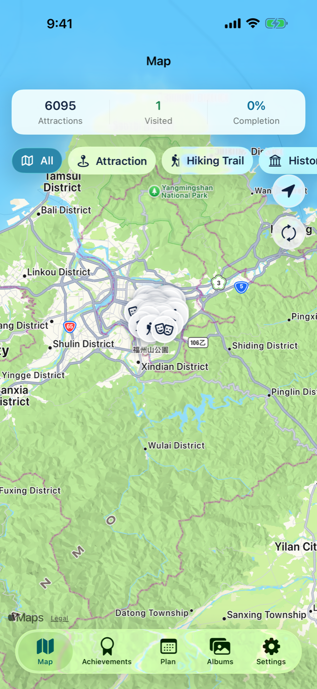
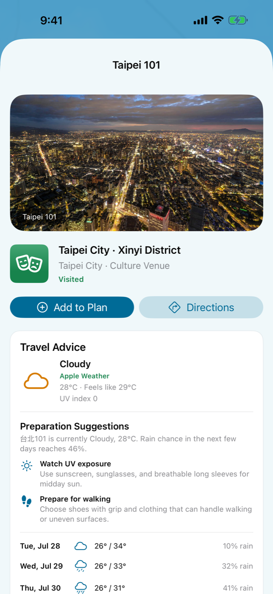
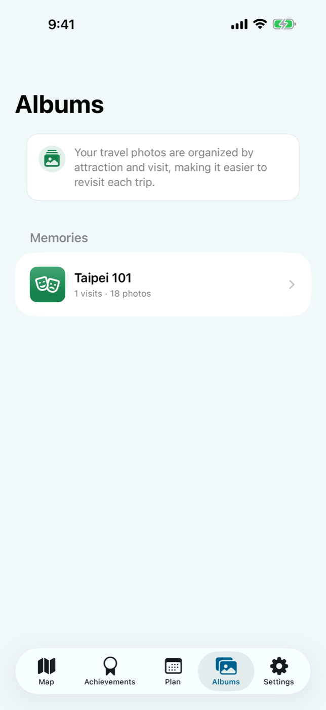

把去過、想去、值得回頭看的台灣旅程，整理在同一張地圖上。
瀏覽全台景點、從照片找回實際足跡、查看分類成就、安排下一站，再用相簿重新走過每一段旅程。

一張會跟著旅程成長的台灣地圖
主畫面把台灣觀光景點放在同一張地圖上，也顯示景點總數、已造訪進度與目前篩選條件。你可以依自然景觀、文化古蹟、登山步道等類別探索，分開查看去過與尚未抵達的地方，也能直接進入景點介紹、地址與路線資訊。
到景點頁先看今天適不適合出發
1.1 在景點頁加入 Apple Weather 即時天氣、多日預報與行前準備建議。除了地址與導航，現在也能在同一頁快速掌握溫度、降雨機率與紫外線等資訊，再決定裝備與出發時間。

從一次出遊，到一份能回看的旅行紀錄
從地圖、分類或搜尋開始，查看景點資料與前往方式，把感興趣的地方加入計畫。
經過照片權限同意後，App 會在裝置上比對照片 GPS 與時間，判斷景點造訪及不同旅次。
回到相簿檢視每個景點的照片與造訪次數，補上旅遊日誌，再透過系統分享選單帶走成果。
成就不是排行榜，而是自己的台灣進度
整體造訪比例與各景點類別分開計算，讓你看見自己已經走過的路，也發現總是擦身而過的主題。想去的景點可以先加入計畫清單，出發前再集中查看地址、路線與準備事項。
相簿以景點與造訪次數整理
同一個景點在不同日期的照片會保留各自旅次脈絡。你可以從「台北 101」這類景點相簿回到某一次旅行，而不必在整個照片圖庫裡反覆搜尋。

1.1 更新
新版依 App Icon 重新統整介面色彩與視覺語言，並改用交通部觀光署 V2 景點資料。資料更新現在有清楚的載入、成功、失敗與手動重試狀態；即使景點從最新清單移除，既有造訪、照片與遊記仍會保留並標示為歷史景點。景點頁也加入 Apple Weather 即時天氣與多日預報。
照片與足跡以隱私為前提
只有在你授權照片存取後，App 才會讀取照片中的位置與拍攝日期，用來建立造訪紀錄、旅次、相簿、成就與計畫。這些比對以裝置端處理為核心；開發者不會透過自己的伺服器收集或上傳照片、相簿內容或 GPS 旅遊足跡。
我的台灣觀光地圖 1.1 已在台灣 App Store 的 iPhone 與 iPad 上架。用一張地圖保存已經走過的台灣，也替下一趟旅程留一個清楚的起點。
Keep the Taiwan places you visited, saved, and want to revisit on one map.
Browse attractions across Taiwan, rediscover real visits through your photos, track category progress, plan the next stop, and return to each journey through albums.

A Taiwan map that grows with every journey
The main map brings Taiwan attractions into one place while showing the total catalog, visited progress, and active filters. Explore natural areas, historic places, trails, and other categories; separate visited places from those still ahead; then open an attraction for its introduction, address, and directions.
Check whether today is right for the trip
Version 1.1 adds Apple Weather conditions, a multi-day forecast, and preparation guidance to each attraction page. Alongside the address and directions, you can review temperature, precipitation, UV conditions, and practical suggestions before deciding when and how to go.

From one day out to a travel record worth revisiting
Start from the map, categories, or search. Review the attraction and route, then save interesting places to your plan.
After photo access is granted, GPS and capture dates are compared on device to identify attractions and separate return trips.
Review photos and visit counts in each attraction album, add a journal note, and use the system share sheet when you want to take it elsewhere.
Progress for your own Taiwan—not a public leaderboard
Overall and category completion reveal what you have explored and which themes you keep missing. Future stops stay together in a planning list, with address, route, and preparation details ready when it is time to go.
Albums stay organized by place and visit
Photos from the same attraction on different dates retain their separate trip context. Return to an album such as Taipei 101 without repeatedly searching through the full photo library.

What changed in 1.1
The interface now follows one visual language inspired by the app icon, and attraction data moves to Taiwan Tourism Administration V2. Loading, success, failure, and manual retry states make data updates clearer. Existing visits, photos, and journals remain available as historical attractions even when a place leaves the latest catalog. Attraction pages also add current conditions and multi-day forecasts from Apple Weather.
Photo memories with privacy in mind
The app reads photo locations and capture dates only after you grant access, using them for visited attractions, trip groups, albums, achievements, and plans. Matching is designed around on-device processing. Apps by Yu-Hsiang Chang does not collect or upload your photos, album content, or GPS travel footprint through developer-operated servers.
My Taiwan Tour Map 1.1 is available for iPhone and iPad on the Taiwan App Store. Keep a map of the Taiwan you have already explored—and a clear starting point for the next trip.